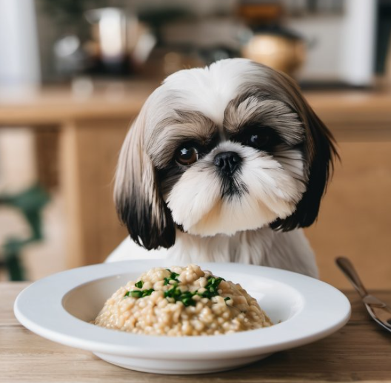
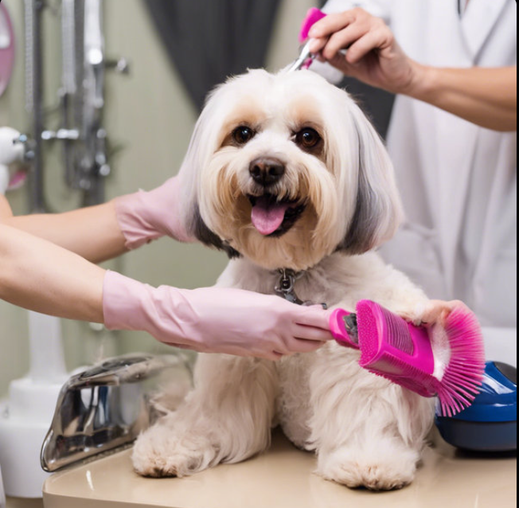
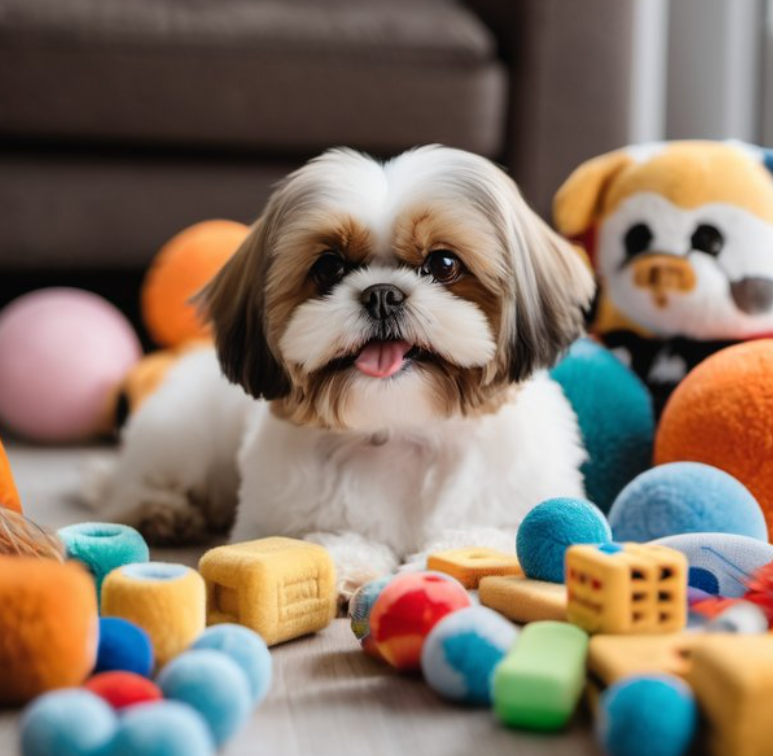
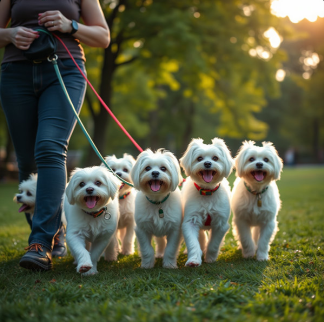

COMPREHENSIVE SHIH TZU HEALTH GUIDE
NO.1
HEALTH & NUTRITION
Shih Tzus are prone to obesity, so it's important to feed them a well-balanced diet and to avoid too many treats throughout the day. A twice-daily, balanced adult small-bite diet is recommended.
NO.2
GROOMING & CARE
Regular grooming is essential to prevent matting and skin problems. Brushing their coat daily and bathing them once every 3–4 weeks helps maintain their hygiene.
NO.3
TRAINING & BEHAVIOR
Consistent positive reinforcement helps in training a Shih Tzu. Short training sessions with rewards encourage good behavior.
NO.4
LIFESTYLE & FUN
Keeping your Shih Tzu active with walks, playtime, and interactive toys contributes to their overall well-being and happiness.
NO.5
COMMUNITY & STORIES
Shih Tzu owners love sharing their experiences and stories. Being part of a community helps new pet owners learn and connect with fellow dog lovers.